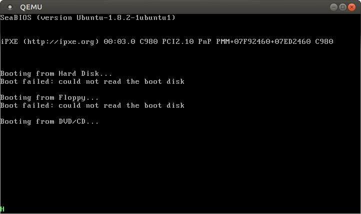
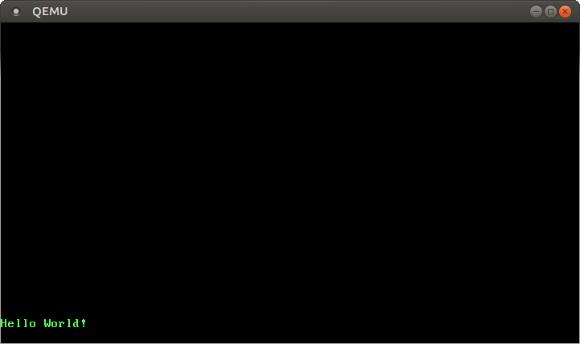
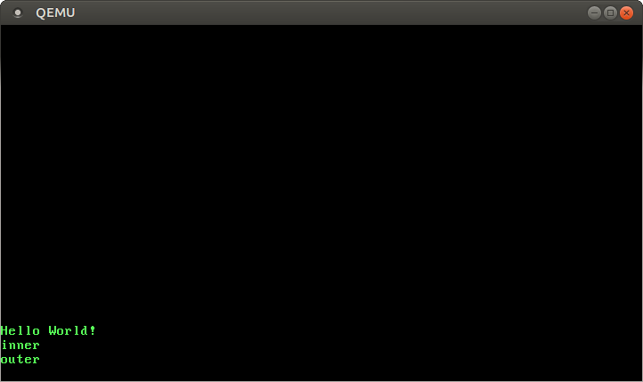

You could also link to: http://embedded.hannobraun....
for another example of getting no_std rust working.
Printing to Screen
No longer updated! You are viewing the a post of the first edition of “Writing an OS in Rust”, which is no longer updated. You can find the second edition here.
In the previous post we switched from assembly to Rust, a systems programming language that provides great safety. But so far we are using unsafe features like raw pointers whenever we want to print to screen. In this post we will create a Rust module that provides a safe and easy-to-use interface for the VGA text buffer. It will support Rust’s formatting macros, too.
This post uses recent unstable features, so you need an up-to-date nighly compiler. If you have any questions, problems, or suggestions please file an issue or create a comment at the bottom. The code from this post is also available on GitHub.
üîóThe VGA Text Buffer
The text buffer starts at physical address 0xb8000 and contains the characters displayed on screen. It has 25 rows and 80 columns. Each screen character has the following format:
| Bit(s) | Value |
|---|---|
| 0-7 | ASCII code point |
| 8-11 | Foreground color |
| 12-14 | Background color |
| 15 | Blink |
The following colors are available:
| Number | Color | Number + Bright Bit | Bright Color |
|---|---|---|---|
| 0x0 | Black | 0x8 | Dark Gray |
| 0x1 | Blue | 0x9 | Light Blue |
| 0x2 | Green | 0xa | Light Green |
| 0x3 | Cyan | 0xb | Light Cyan |
| 0x4 | Red | 0xc | Light Red |
| 0x5 | Magenta | 0xd | Pink |
| 0x6 | Brown | 0xe | Yellow |
| 0x7 | Light Gray | 0xf | White |
Bit 4 is the bright bit, which turns for example blue into light blue. It is unavailable in background color as the bit is used to control if the text should blink. If you want to use a light background color (e.g. white) you have to disable blinking through a BIOS function.
üîóA basic Rust Module
Now that we know how the VGA buffer works, we can create a Rust module to handle printing:
// in src/lib.rs
mod vga_buffer;
The content of this module can live either in src/vga_buffer.rs or src/vga_buffer/mod.rs. The latter supports submodules while the former does not. But our module does not need any submodules so we create it as src/vga_buffer.rs.
All of the code below goes into our new module (unless specified otherwise).
üîóColors
First, we represent the different colors using an enum:
#[allow(dead_code)]
#[repr(u8)]
pub enum Color {
Black = 0,
Blue = 1,
Green = 2,
Cyan = 3,
Red = 4,
Magenta = 5,
Brown = 6,
LightGray = 7,
DarkGray = 8,
LightBlue = 9,
LightGreen = 10,
LightCyan = 11,
LightRed = 12,
Pink = 13,
Yellow = 14,
White = 15,
}
We use a C-like enum here to explicitly specify the number for each color. Because of the repr(u8) attribute each enum variant is stored as an u8. Actually 4 bits would be sufficient, but Rust doesn’t have an u4 type.
Normally the compiler would issue a warning for each unused variant. By using the #[allow(dead_code)] attribute we disable these warnings for the Color enum.
To represent a full color code that specifies foreground and background color, we create a newtype on top of u8:
struct ColorCode(u8);
impl ColorCode {
const fn new(foreground: Color, background: Color) -> ColorCode {
ColorCode((background as u8) << 4 | (foreground as u8))
}
}
The ColorCode contains the full color byte, containing foreground and background color. Blinking is enabled implicitly by using a bright background color (soon we will disable blinking anyway). The new function is a const function to allow it in static initializers. As const functions are unstable we need to add the const_fn feature in src/lib.rs.
üîóThe Text Buffer
Now we can add structures to represent a screen character and the text buffer:
#[repr(C)]
struct ScreenChar {
ascii_character: u8,
color_code: ColorCode,
}
const BUFFER_HEIGHT: usize = 25;
const BUFFER_WIDTH: usize = 80;
struct Buffer {
chars: [[ScreenChar; BUFFER_WIDTH]; BUFFER_HEIGHT],
}
Since the field ordering in default structs is undefined in Rust, we need the repr(C) attribute. It guarantees that the struct’s fields are laid out exactly like in a C struct and thus guarantees the correct field ordering.
To actually write to screen, we now create a writer type:
use core::ptr::Unique;
pub struct Writer {
column_position: usize,
color_code: ColorCode,
buffer: Unique<Buffer>,
}
The writer will always write to the last line and shift lines up when a line is full (or on \n). The column_position field keeps track of the current position in the last row. The current foreground and background colors are specified by color_code and a pointer to the VGA buffer is stored in buffer. To make it possible to create a static Writer later, the buffer field stores an Unique<Buffer> instead of a plain *mut Buffer. Unique is a wrapper that implements Send/Sync and is thus usable as a static. Since it’s unstable, you may need to add the unique feature to lib.rs:
// in src/lib.rs
#![feature(unique)]
üîóPrinting Characters
Now we can use the Writer to modify the buffer’s characters. First we create a method to write a single ASCII byte (it doesn’t compile yet):
impl Writer {
pub fn write_byte(&mut self, byte: u8) {
match byte {
b'\n' => self.new_line(),
byte => {
if self.column_position >= BUFFER_WIDTH {
self.new_line();
}
let row = BUFFER_HEIGHT - 1;
let col = self.column_position;
let color_code = self.color_code;
self.buffer().chars[row][col] = ScreenChar {
ascii_character: byte,
color_code: color_code,
};
self.column_position += 1;
}
}
}
fn buffer(&mut self) -> &mut Buffer {
unsafe{ self.buffer.as_mut() }
}
fn new_line(&mut self) {/* TODO */}
}
If the byte is the newline byte \n, the writer does not print anything. Instead it calls a new_line method, which we’ll implement later. Other bytes get printed to the screen in the second match case.
When printing a byte, the writer checks if the current line is full. In that case, a new_line call is required before to wrap the line. Then it writes a new ScreenChar to the buffer at the current position. Finally, the current column position is advanced.
The buffer() auxiliary method converts the raw pointer in the buffer field into a safe mutable buffer reference. The unsafe block is needed because the as_mut() method of Unique is unsafe. But our buffer() method itself isn’t marked as unsafe, so it must not introduce any unsafety (e.g. cause segfaults). To guarantee that, it’s very important that the buffer field always points to a valid Buffer. It’s like a contract that we must stand to every time we create a Writer. To ensure that it’s not possible to create an invalid Writer from outside of the module, the struct must have at least one private field and public creation functions are not allowed either.
üîóCannot Move out of Borrowed Content
When we try to compile it, we get the following error:
error[E0507]: cannot move out of borrowed content
--> src/vga_buffer.rs:79:34
|
79 | let color_code = self.color_code;
| ^^^^ cannot move out of borrowed content
The reason it that Rust moves values by default instead of copying them like other languages. And we cannot move color_code out of self because we only borrowed self. For more information check out the ownership section in the Rust book.
To fix it, we can implement the Copy trait for the ColorCode type. The easiest way to do this is to use the built-in derive macro:
#[derive(Debug, Clone, Copy)]
struct ColorCode(u8);
We also derive the Clone trait, since it’s a requirement for Copy, and the Debug trait, which allows us to print this field for debugging purposes.
Now our project should compile again.
However, the documentation for Copy says: “if your type can implement Copy, it should”. Therefore we also derive Copy for Color and ScreenChar:
#[allow(dead_code)]
#[derive(Debug, Clone, Copy)]
#[repr(u8)]
pub enum Color {...}
#[derive(Debug, Clone, Copy)]
#[repr(C)]
struct ScreenChar {...}
üîóTry it out!
To write some characters to the screen, you can create a temporary function:
pub fn print_something() {
let mut writer = Writer {
column_position: 0,
color_code: ColorCode::new(Color::LightGreen, Color::Black),
buffer: unsafe { Unique::new_unchecked(0xb8000 as *mut _) },
};
writer.write_byte(b'H');
}
It just creates a new Writer that points to the VGA buffer at 0xb8000. To use the unstable Unique::new_unchecked function, we need to add the feature flag #![feature(const_unique_new)] to the top of our src/lib.rs.
Then it writes the byte b'H' to it. The b prefix creates a byte character, which represents an ASCII code point. When we call vga_buffer::print_something in main, a H should be printed in the lower left corner of the screen in light green:

üîóVolatile
We just saw that our H was printed correctly. However, it might not work with future Rust compilers that optimize more aggressively.
The problem is that we only write to the Buffer and never read from it again. The compiler doesn’t know about the side effect that some characters appear on the screen. So it might decide that these writes are unnecessary and can be omitted.
To avoid this erroneous optimization, we need to specify these writes as volatile. This tells the compiler that the write has side effects and should not be optimized away.
In order to use volatile writes for the VGA buffer, we use the volatile library. This crate (this is how packages are called in the Rust world) provides a Volatile wrapper type with read and write methods. These methods internally use the read_volatile and write_volatile functions of the standard library and thus guarantee that the reads/writes are not optimized away.
We can add a dependency on the volatile crate by adding it to the dependencies section of our Cargo.toml:
# in Cargo.toml
[dependencies]
volatile = "0.1.0"
The 0.1.0 is the semantic version number. For more information, see the Specifying Dependencies guide of the cargo documentation.
Now we’ve declared that our project depends on the volatile crate and are able to import it in src/lib.rs:
// in src/lib.rs
extern crate volatile;
Let’s use it to make writes to the VGA buffer volatile. We update our Buffer type as follows:
// in src/vga_buffer.rs
use volatile::Volatile;
struct Buffer {
chars: [[Volatile<ScreenChar>; BUFFER_WIDTH]; BUFFER_HEIGHT],
}
Instead of a ScreenChar, we’re now using a Volatile<ScreenChar>. (The Volatile type is generic and can wrap (almost) any type). This ensures that we can’t accidentally write to it through a “normal” write. Instead, we have to use the write method now.
This means that we have to update our Writer::write_byte method:
impl Writer {
pub fn write_byte(&mut self, byte: u8) {
match byte {
b'\n' => self.new_line(),
byte => {
...
self.buffer().chars[row][col].write(ScreenChar {
ascii_character: byte,
color_code: color_code,
});
...
}
}
}
...
}
Instead of a normal assignment using =, we’re now using the write method. This guarantees that the compiler will never optimize away this write.
üîóPrinting Strings
To print whole strings, we can convert them to bytes and print them one-by-one:
// in `impl Writer`
pub fn write_str(&mut self, s: &str) {
for byte in s.bytes() {
self.write_byte(byte)
}
}
You can try it yourself in the print_something function.
When you print strings with some special characters like ä or λ, you’ll notice that they cause weird symbols on screen. That’s because they are represented by multiple bytes in UTF-8. By converting them to bytes, we of course get strange results. But since the VGA buffer doesn’t support UTF-8, it’s not possible to display these characters anyway.
üîóSupport Formatting Macros
It would be nice to support Rust’s formatting macros, too. That way, we can easily print different types like integers or floats. To support them, we need to implement the core::fmt::Write trait. The only required method of this trait is write_str that looks quite similar to our write_str method. To implement the trait, we just need to move it into an impl fmt::Write for Writer block and add a return type:
use core::fmt;
impl fmt::Write for Writer {
fn write_str(&mut self, s: &str) -> fmt::Result {
for byte in s.bytes() {
self.write_byte(byte)
}
Ok(())
}
}
The Ok(()) is just a Ok Result containing the () type. We can drop the pub because trait methods are always public.
Now we can use Rust’s built-in write!/writeln! formatting macros:
// in the `print_something` function
use core::fmt::Write;
let mut writer = Writer {...};
writer.write_byte(b'H');
writer.write_str("ello! ");
write!(writer, "The numbers are {} and {}", 42, 1.0/3.0);
Now you should see a Hello! The numbers are 42 and 0.3333333333333333 at the bottom of the screen.
üîóNewlines
Right now, we just ignore newlines and characters that don’t fit into the line anymore. Instead we want to move every character one line up (the top line gets deleted) and start at the beginning of the last line again. To do this, we add an implementation for the new_line method of Writer:
// in `impl Writer`
fn new_line(&mut self) {
for row in 1..BUFFER_HEIGHT {
for col in 0..BUFFER_WIDTH {
let buffer = self.buffer();
let character = buffer.chars[row][col].read();
buffer.chars[row - 1][col].write(character);
}
}
self.clear_row(BUFFER_HEIGHT-1);
self.column_position = 0;
}
fn clear_row(&mut self, row: usize) {/* TODO */}
We iterate over all screen characters and move each characters one row up. Note that the range notation (..) is exclusive the upper bound. We also omit the 0th row (the first range starts at 1) because it’s the row that is shifted off screen.
Now we only need to implement the clear_row method to finish the newline code:
// in `impl Writer`
fn clear_row(&mut self, row: usize) {
let blank = ScreenChar {
ascii_character: b' ',
color_code: self.color_code,
};
for col in 0..BUFFER_WIDTH {
self.buffer().chars[row][col].write(blank);
}
}
This method clears a row by overwriting all of its characters with a space character.
üîóProviding an Interface
To provide a global writer that can used as an interface from other modules, we can add a static writer:
pub static WRITER: Writer = Writer {
column_position: 0,
color_code: ColorCode::new(Color::LightGreen, Color::Black),
buffer: unsafe { Unique::new_unchecked(0xb8000 as *mut _) },
};
But we can’t use it to print anything! You can try it yourself in the print_something function. The reason is that we try to take a mutable reference (&mut) to a immutable static when calling WRITER.print_byte.
To resolve it, we could use a mutable static. But then every read and write to it would be unsafe since it could easily introduce data races and other bad things. Using static mut is highly discouraged, there are even proposals to remove it.
But what are the alternatives? We could try to use a cell type like RefCell or even UnsafeCell to provide interior mutability. But these types aren’t Sync (with good reason), so we can’t use them in statics.
To get synchronized interior mutability, users of the standard library can use Mutex. It provides mutual exclusion by blocking threads when the resource is already locked. But our basic kernel does not have any blocking support or even a concept of threads, so we can’t use it either. However there is a really basic kind of mutex in computer science that requires no operating system features: the spinlock. Instead of blocking, the threads simply try to lock it again and again in a tight loop and thus burn CPU time until the mutex is free again.
To use a spinning mutex, we can add the spin crate as a dependency:
# in Cargo.toml
[dependencies]
rlibc = "0.1.4"
spin = "0.4.5"
// in src/lib.rs
extern crate spin;
Then we can use the spinning Mutex to add interior mutability to our static writer:
// in src/vga_buffer.rs again
use spin::Mutex;
...
pub static WRITER: Mutex<Writer> = Mutex::new(Writer {
column_position: 0,
color_code: ColorCode::new(Color::LightGreen, Color::Black),
buffer: unsafe { Unique::new_unchecked(0xb8000 as *mut _) },
});
Mutex::new is a const function, too, so it can be used in statics.
Now we can easily print from our main function:
// in src/lib.rs
pub extern fn rust_main() {
use core::fmt::Write;
vga_buffer::WRITER.lock().write_str("Hello again");
write!(vga_buffer::WRITER.lock(), ", some numbers: {} {}", 42, 1.337);
loop{}
}
Note that we need to import the Write trait if we want to use its functions.
üîóA println macro
Rust’s macro syntax is a bit strange, so we won’t try to write a macro from scratch. Instead we look at the source of the println! macro in the standard library:
macro_rules! println {
($fmt:expr) => (print!(concat!($fmt, "\n")));
($fmt:expr, $($arg:tt)*) => (print!(concat!($fmt, "\n"), $($arg)*));
}
Macros are defined through one or more rules, which are similar to match arms. The println macro has two rules: The first rule is for invocations with a single argument (e.g. println!("Hello")) and the second rule is for invocations with additional parameters (e.g. println!("{}{}", 4, 2)).
Both rules simply append a newline character (\n) to the format string and then invoke the print! macro, which is defined as:
macro_rules! print {
($($arg:tt)*) => ($crate::io::_print(format_args!($($arg)*)));
}
The macro expands to a call of the _print function in the io module. The $crate variable ensures that the macro also works from outside the std crate. For example, it expands to ::std when it’s used in other crates.
The format_args macro builds a fmt::Arguments type from the passed arguments, which is passed to _print. The _print function of libstd is rather complicated, as it supports different Stdout devices. We don’t need that complexity since we just want to print to the VGA buffer.
To print to the VGA buffer, we just copy the println! macro and modify the print! macro to use our static WRITER instead of _print:
// in src/vga_buffer.rs
macro_rules! print {
($($arg:tt)*) => ({
use core::fmt::Write;
let mut writer = $crate::vga_buffer::WRITER.lock();
writer.write_fmt(format_args!($($arg)*)).unwrap();
});
}
Instead of a _print function, we call the write_fmt method of our static Writer. Since we’re using a method from the Write trait, we need to import it before. The additional unwrap() at the end panics if printing isn’t successful. But since we always return Ok in write_str, that should not happen.
Note the additional {} scope around the macro: We write => ({…}) instead of => (…). The additional {} avoids that the Write trait is silently imported to the parent scope when print is used.
üîóClearing the screen
We can now use println! to add a rather trivial function to clear the screen:
// in src/vga_buffer.rs
pub fn clear_screen() {
for _ in 0..BUFFER_HEIGHT {
println!("");
}
}
üîóHello World using println
To use println in lib.rs, we need to import the macros of the VGA buffer module first. Therefore we add a #[macro_use] attribute to the module declaration:
// in src/lib.rs
#[macro_use]
mod vga_buffer;
#[no_mangle]
pub extern fn rust_main() {
// ATTENTION: we have a very small stack and no guard page
vga_buffer::clear_screen();
println!("Hello World{}", "!");
loop{}
}
Since we imported the macros at crate level, they are available in all modules and thus provide an easy and safe interface to the VGA buffer.
As expected, we now see a “Hello World!” on a cleared screen:

üîóDeadlocks
Whenever we use locks, we must be careful to not accidentally introduce deadlocks. A deadlock occurs when a thread/program waits for a lock that will never be released. Normally, this happens when multiple threads access multiple locks. For example, when thread A holds lock 1 and tries to acquire lock 2 and – at the same time – thread B holds lock 2 and tries to acquire lock 1.
However, a deadlock can also occur when a thread tries to acquire the same lock twice. This way we can trigger a deadlock in our VGA driver:
// in rust_main in src/lib.rs
println!("{}", { println!("inner"); "outer" });
The argument passed to println is new block that resolves to the string “outer” (a block always returns the result of the last expression). But before returning “outer”, the block tries to print the string “inner”.
When we try this code in QEMU, we see that neither of the strings are printed. To understand what’s happening, we take a look at our print macro again:
macro_rules! print {
($($arg:tt)*) => ({
use core::fmt::Write;
let mut writer = $crate::vga_buffer::WRITER.lock();
writer.write_fmt(format_args!($($arg)*)).unwrap();
});
}
So we first lock the WRITER and then we evaluate the arguments using format_args. The problem is that the argument in our code example contains another println, which tries to lock the WRITER again. So now the inner println waits for the outer println and vice versa. Thus, a deadlock occurs and the CPU spins endlessly.
üîóFixing the Deadlock
In order to fix the deadlock, we need to evaluate the arguments before locking the WRITER. We can do so by moving the locking and printing logic into a new print function (like it’s done in the standard library):
// in src/vga_buffer.rs
macro_rules! print {
($($arg:tt)*) => ({
$crate::vga_buffer::print(format_args!($($arg)*));
});
}
pub fn print(args: fmt::Arguments) {
use core::fmt::Write;
WRITER.lock().write_fmt(args).unwrap();
}
Now the macro only evaluates the arguments (through format_args!) and passes them to the new print function. The print function then locks the WRITER and prints the formatting arguments using write_fmt. So now the arguments are evaluated before locking the WRITER.
Thus, we fixed the deadlock:

We see that both “inner” and “outer” are printed.
üîóWhat‚Äôs next?
In the next posts we will map the kernel pages correctly so that accessing 0x0 or writing to .rodata is not possible anymore. To obtain the loaded kernel sections we will read the Multiboot information structure. Then we will create a paging module and use it to switch to a new page table where the kernel sections are mapped correctly.
The next post describes the Multiboot information structure and creates a frame allocator using the information about memory areas.
üîóOther Rust OS Projects
Now that you know the very basics of OS development in Rust, you should also check out the following projects:
-
Rust Bare-Bones Kernel: A basic kernel with roughly the same functionality as ours. Writes output to the serial port instead of the VGA buffer and maps the kernel to the higher half (instead of our identity mapping). Note: You need to cross compile binutils to build it (or you create some symbolic links1 if you’re on x86_64).
-
RustOS: More advanced kernel that supports allocation, keyboard inputs, and threads. It also has a scheduler and a basic network driver.
-
“Tifflin” Experimental Kernel: Big kernel project by thepowersgang, that is actively developed and has over 650 commits. It has a separate userspace and supports multiple file systems, even a GUI is included. Needs a cross compiler.
-
Redox: Probably the most complete Rust OS today. It has an active community and over 1000 Github stars. File systems, network, an audio player, a picture viewer, and much more. Just take a look at the screenshots.
üîóFootnotes
1
You will need to symlink x86_64-none_elf-XXX to /usr/bin/XXX where XXX is in {as, ld, objcopy, objdump, strip}. The x86_64-none_elf-XXX files must be in some folder that is in your $PATH. But then you can only build for your x86_64 host architecture, so use this hack only for testing.
Please add #[repr(C)] to some of your structs, in particular the ones that depend on having a specific layout.
Thanks for the hint! On `ScreenChar` it is definitely required. But I'm not quite sure if it's needed for the `ColorCode` newtype…
Where (else) would you add #[repr(C)]?